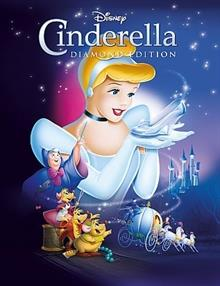
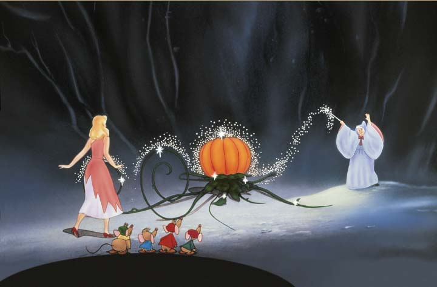
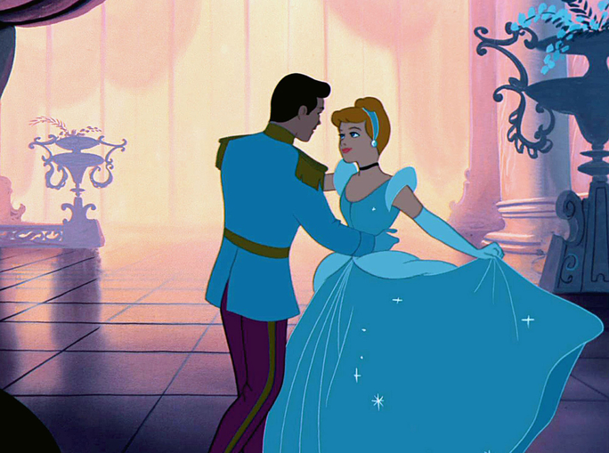
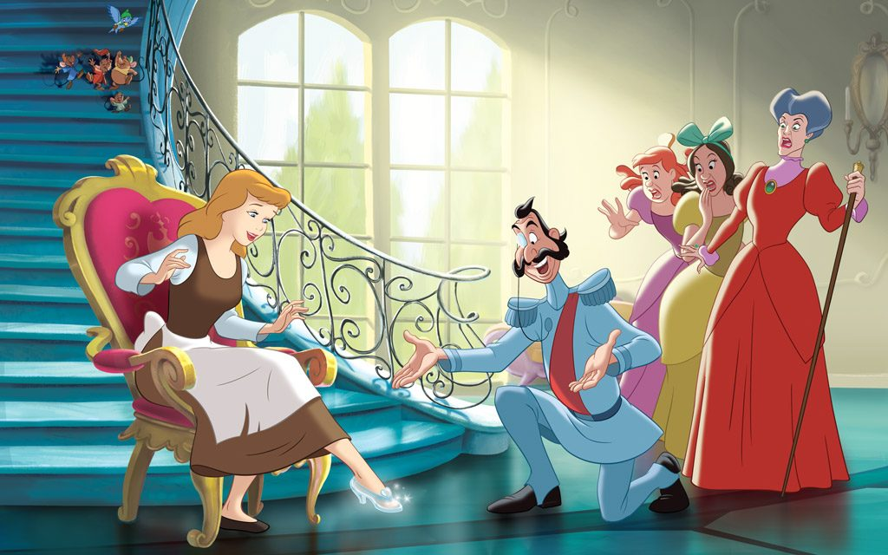

Cindrella Story
Cindrella was a beautiful girl.
(Cindrella güzel bir kızdı.)
She was so beautiful that everybody fell in love with her.
(O kadar güzeldiki herkes ona aşık olurdu)
She lived many years ago.
(o çok seneler önce yaşamıştı.)
She didn’t have a father and a mother,so she lived with her aunt.
(annesi ve babası yoktu bu yüzden halasıyla yaşıyordu.)
Her aunt had two daughters.They were very ugly.
(halasının 2 kızı vardı.)(onlar çok çirkindi.)
They were so ugly that nobody fell in love with them.
(Onlar okadar çirkindiki hiç kimse onlara aşık olmazdı)
They had long noses,small eyes and ears.
(uzun burunları,küçük gözleri ve kulakları vardı.)
They were jealous of Cindrella,
(her zaman Cindrellayı kıskanırlardı )
so they always scolded Cindrella “Go to the kitchen.do the washing up.
(bu yüzden onu Mutfağa git,bulaşıkları yıka)
Do the cleaning.Do the cooking.Do the sweeping” they said.
(temziliği yap, yemek yap,toz al diye azarlarlardılar.)
Cindrella went to the kitchen and cried.
(Cindrella mutfağa giderdi ve ağlardı.)
One day a message came from the King.
(bir gün kraldan bir mesaj geldi.)
The King’s son,the prince,was old enough to marry.
(kralı oğlu,prens, evlenecek yaşa gelmişti.)
There was a party in the palace.
(sarayda bir parti olacaktı.)
All the beautiful girls in the country would come to the party.
(ülkedeki bütün güzel kızlar gelicekti)
The prince was going to choose his wife.
(prens eşini seçecekti.)
The ugly sisters decided to go to the party.They wore beautiful clothes.
(çirkin kız kardeşler partiye gitmeye karar verdiler.)(güzel kıyafetler giydiler.)
They were very happy because they wanted to marry the prince.
(onlar çok mutluydular çünkü prensle evlenmek istiyorlardı.)
Cindrella wanted to go to the party too.
(Cindrella da partiye gitmek istiyordu.)
She went to her aunt and asked politely “Sweet aunt. Please,may I go to the party?
(gidip halasına kibarca sordu; )(canım halam ben de paritye gidebilirniyimr miyim?)
”Her aunt answered rudely, “No, you can’t. Go to the kitchen immediately.
(halası hayır gelemezsin çabuk mutfağa git diye cevap verdi.)
Poor Cindrella went to the kitchen.A coach came in front of the house.
(zavallı Cindrella mutfağa gitti.)(evin önüne bir faytonı geldi.)
The aunt and her ugly daughters got in the the coach and went to the palace.
(hala ve çirkin kızları faytona binip saraya gittiler.)
While Cindrella was crying in the kitchen,she heard a voice.
(Cindrella mutfakta ağlarken bir ses duydu.)
She looked up and saw an old lady with a stick with a shining star at the top.
(yukarı baktı ve elinde tepesinde parıldayan bir yıldız olan yaşlı kadın gördü.)
“Don’t cry Cindrella” said the old lady. “I will help you..
(ağlama Cindrella dedi yaşlı kadın.sana yardım edeceğim.)
First bring me a pumpkin and a Mouse trap with two mice in it.”
(Önce bana bir bal kabağı veiçinde iki tane fare olan bir fare kapanıgetir.)
Cindrella stopped crying.she went to the cellar.
(Cindrella ağlamayı kesti ve kilere gitti.)
She brought a pumpkin and a mouse trap with two mice in it.
(Bir bal kabağı ve içinde 2 tane fare olan bir fare kapanı getirdi.)
The old lady waved her stick at the pumpkin.
(yaşlı kadın sopasını bal kabağının üzerine salladı.)
The pumpkin changed into a coach.She waved her stick at the mice.
(bal kabağı bir faytona dönüştü.)(çubuğunu fareler üzerine salladı.)
The mice changed into two white horses.She waved her stick at Cindrella .
(fareler 2 beyaz ata dönüştüler.)(çubuğunu Cindrella’nın üzerine salladı.)
Cindrella wore a white dress made of silk with silver buttons.
(Cindrella gümüş düğmeleri olan ipekten beyaz bir elbise giydi.)
She wore glass shoes.Cindrella got into the coach.
(camdan ayakkabılar giydi.)(Cindrella faytona bindi.)
The old lady whispered ,”Don’t forget to come back before midnight,Cindrella.”
(Yaşlı kadın gece yarısından önce gelmeyi unutma Cindrella diye fısıldadı.)
Cindrella went to the palace.She danced with the prince .
(Cindrella saraya gitti.)(Prensle dans etti.)
The prince and Cindrella fell in love with each other She forgot the time.
(Prens ve Cindrella birbirlerine aşık oldular)(saati unuttu)
When the clock began to strike 12,she remembered the old lady’s words.
(saat 12’yi vurduğunda yaşlı kadının sözleri aklına geldi.)
She ran out of the palace.
(saraydan dışarı çıktı.)
She went home but she forgot one of the glass shoes on the steps.
(eve gitti ama camdan ayakkabılardan birini merdivenler de unuttu.)
The prince found the glass shoe and ordered the soldiers to find Cindrella.
(Prens camdan ayakkabıyı buldu ve askerlere Cindrella’yı bulmaları için emir verdi.)
The soldiers went to the aunt’s house.
(askerler halanın evine gittiler.)
The ugly sisters argued with each other.
(çirkin kardeşler birbirleriyle kavga ettiler.)
They pretended to put on the glass shoe
(camdan ayakkabıyı giyer gibi yaptılar)
but they couldn’t because their feet were big and fat.
(ama giyemediler çünkü ayakları çok büyük ve şişmandı.)
The glass shoe fitted Cindrella perfectly and she put it on.
(camdan ayakkabı Cindrella’ya tam oldu.)(ve onu giydi.)
Cindrella and the prince married.They lived happily ever after.
(Cindrella ve Prens evlendiler.)(mutlu bir şekilde yaşadılar.)



